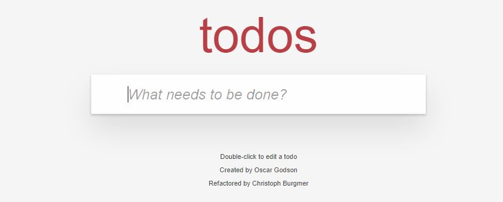
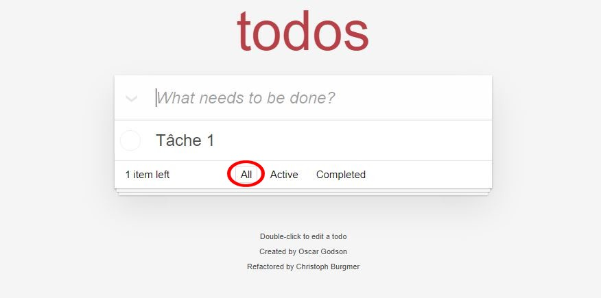
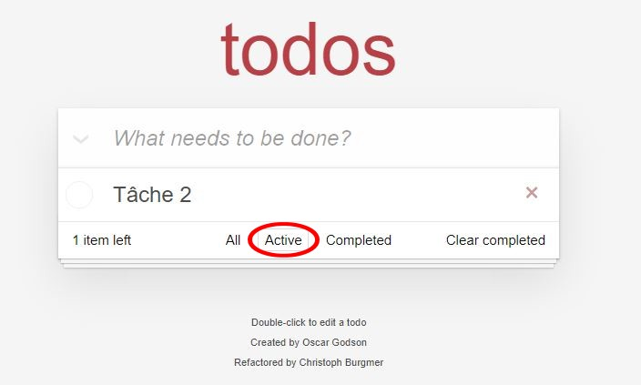
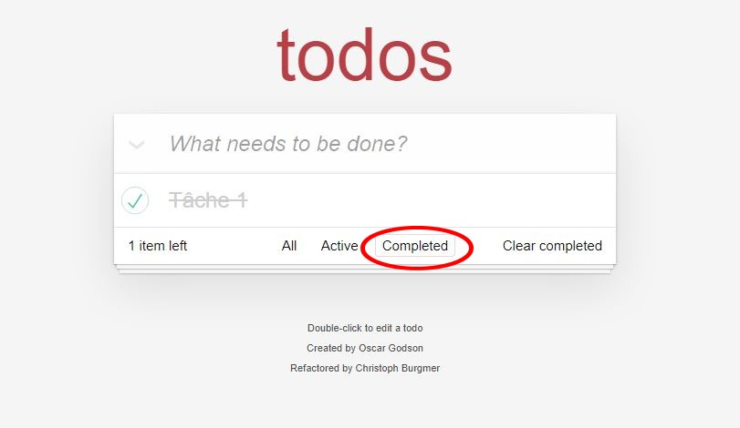
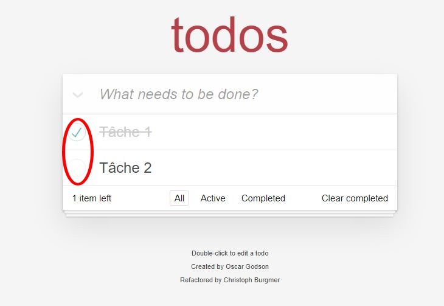
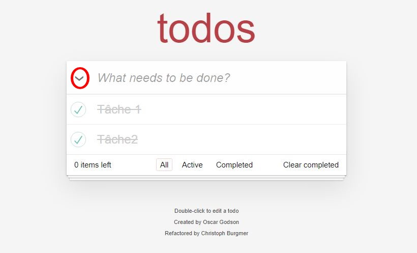
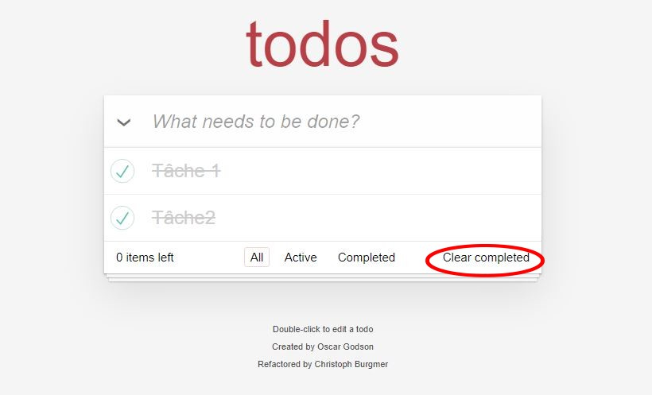

To-Do List
To-Do List est une application qui a pour but de comme son nom l'indique de faire une liste de tâche à faire.
Fonctionnalités
Ajouter une tâche
Il suffit de rentré le texte dans le champs indiqué. Ensuite appuyer sur la touche "Entrée" pour valider la tâche
Afficher les tâches
Afficher toutes les taches
Cliquer sur le bouton "All"
Afficher les tâches restant à faire
Cliquer sur le bouton "Active"
Afficher les tâches validées
Cliquer sur le bouton "Completed"
Compléter une tâche
Cliquer sur la checkbox vide à côté de la tâche pour la compléter. Cliquer sur la checkbox validée à côté de la tâche pour la rendre active.
La flèche vers le bas permet de compléter toutes les tâches en même temps si l'on clique dessus.
Supprimer les tâches
Lorsque les tâches sont completées, il est possible de les supprimer toutes en même temps en cliquant sur "Clear completed"
Documentation technique
Vous trouverez la documentation technique ici :